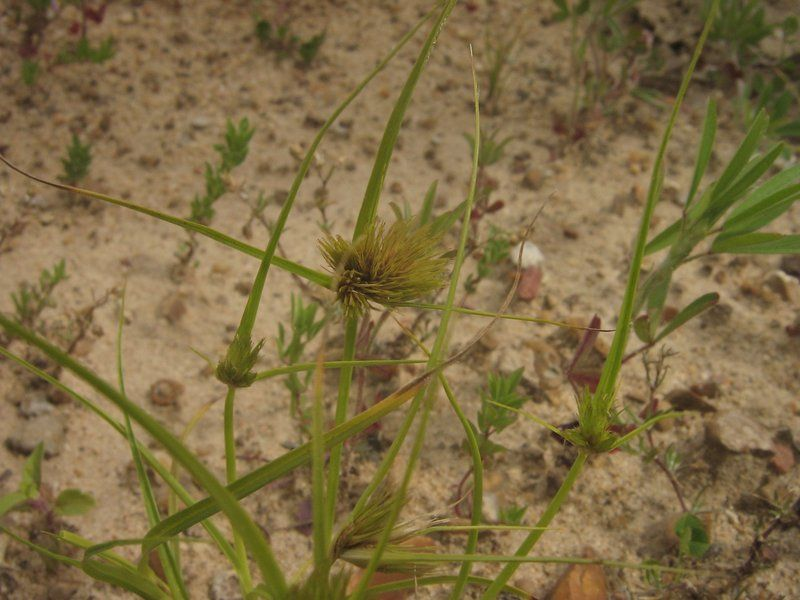
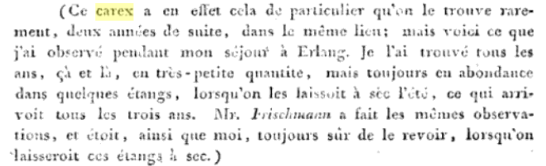

Les pages de JONATHAN
Autres fleurs et lycopodes
Laîche de Bohême,
laîche souchet,
laîche voyageuse
CAREX bohemica
Schreb., 1772
Famille des
Cyperaceae
Ordre des Poales
Étang de la Tuilerie, juin 2009

Christian Schkuhr (1741-1811) , professeur de botanique à l'université de
Wittemberg
en Allemagne, remarquait au début du XIXe siècle :

Pour en savoir plus ►
▲